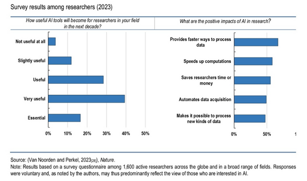
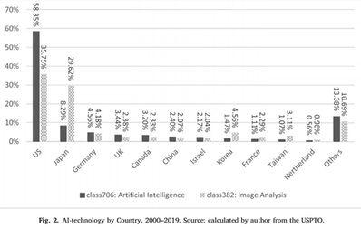
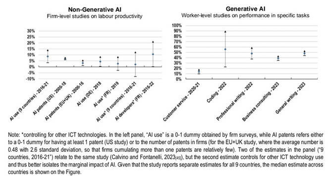

Since the emergence of artificial intelligence, researchers have asked whether AI boosts or hinders labor productivity. The evidence is divided. Some studies show that AI does contribute to labor productivity improvements, while others point to damaging effects. The answer is not binary; rather, it depends on how AI technology is deployed and in which sectors it is applied.
Data limitations and initial evidence
An important caveat is that AI has no universally agreed-upon definition, and firm-level data remains scarce. The data available tends to reflect short-run results rather than long-term impacts. Nevertheless, emerging research indicates that AI can improve productivity in several ways: through the creation of modern technologies, the ability to replace or enhance existing technologies, and strengthened predictive capabilities.

Where AI drives productivity gains
Key sectors where AI delivers measurable productivity improvements include project management, human resources, customer services, data analysis, and research. AI increases productivity in these domains because it reduces time spent on repetitive tasks through automation, lowers error rates (thereby enhancing output quality), and enables personalization at scale. Crucially, these gains are not speculative: in a study of Taiwanese firms, companies that have obtained AI patents show a nearly 13% increase in productivity compared to those without AI patents.
Micro-level data from the OECD's April 2024 Artificial Intelligence Papers provide initial evidence that early AI adopters have experienced considerable productivity returns. One notable finding is that workers with fewer competencies display a stronger positive response to AI than highly skilled workers—suggesting that AI may serve to complement less experienced workers more effectively. In specific assignments, particularly those involving writing, customer service, and software development, workers have reported performance enhancements of between 10% and 56%. Beyond productivity, these studies also report increased physical and mental well-being, along with a rise in job-related happiness.
Over-automation is defined as when the speed of automation exceeds the socially beneficial rate of automation. — Daron Acemoğlu (2021)
The risk of over-automation
However, not all economists are optimistic. Daron Acemoğlu, in his influential work on the harms of AI, has developed theoretical frameworks about the potential negative effects of artificial intelligence. His key insight is that what matters is not whether AI is used, but how it is used. When AI is deployed to accomplish tasks that were previously nonexistent or to enhance human capability, the outcome can be positive—such as integrating AI into classroom environments to generate novel educational content and improve teacher productivity. Conversely, if AI is applied to automate tasks that humans can already perform adequately, the result may be counterproductive due to over-automation.
Over-automation, in this framework, occurs when the speed and scope of automation exceed what is socially optimal. Over-automation can misallocate resources, displace workers without sufficient reskilling, and paradoxically lower overall productivity by destroying tacit knowledge or human engagement. These dynamics underscore why the relationship between AI and productivity is not straightforward.


The global paradox
A striking contradiction emerges when comparing empirical findings across countries. While Damioli et al. (2021) found that firms doubling their AI patent count achieved a 3% productivity increase, the United States presents a puzzling counterexample. According to Syverson (2017), despite the U.S. having the most advanced AI technology globally, average labor productivity has declined. Between 1995 and 2004, the U.S. average labor productivity rate stood at 2.8%, but between 2005 and 2015 it fell to 1.3%—a substantial drop during the very period when AI investment and deployment accelerated. This paradox suggests that aggregate productivity gains from AI may be slower to materialize than firm-level or sector-level studies imply, or that AI's benefits are concentrated in specific industries while other sectors lag behind.
In conclusion, AI has demonstrated the potential to create both positive and negative outcomes for labor productivity through different pathways. The evidence to date suggests that AI can boost productivity when deployed thoughtfully in roles that complement human capability or address new problems, but risks over-automation when applied indiscriminately to tasks humans already perform well. Much more time and more granular firm-level data are needed to fully comprehend AI's long-term implications for workers and economies. In the interim, the most responsible approach is to deploy AI in ways that prioritize human well-being and economic resilience, avoiding the trap of automation for its own sake.
Selected references
- Acemoglu, D. (2021). Harms of AI. NBER Working Paper No. 29247. National Bureau of Economic Research.
- Damioli, G., Van Roy, V., & Vertesy, D. (2021). The impact of artificial intelligence on labor productivity. Eurasian Economic Review, 11(1), 1–25.
- OECD. (2024). The impact of artificial intelligence on productivity, distribution and growth: Key mechanisms, initial evidence and policy challenges.
- Syverson, C. (2017). Challenges to mismeasurement explanations for the US productivity slowdown. Journal of Economic Perspectives, 31(2), 165–80.
- Yang, C. (2022). How artificial intelligence technology affects productivity and employment: Firm-level evidence from Taiwan. Research Policy, 51(6), 104536.